成熟案例参考图鉴 · 工具轨 / 地图控件 / 图标库
一、编辑器工具条与工具竖轨
画布上的动作入口：横条成组、竖轨单列对齐、当前工具靠底色反白，低频动作收进弹层二级条。

Figma · 白底圆角横条
白底细圆角横条，当前工具蓝底反白方块，其余灰图标；组间细分隔，右侧另起工具簇。选中靠底色反白，不靠图标变色。
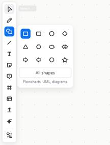
Zoom Whiteboard · 左竖轨 + 弹层
工具单列左竖轨，选中蓝底方块；形状类展开右侧网格弹层，弹层内再选当前图形。竖轨对齐与弹层网格可对照本项目抓手/选择同槽。
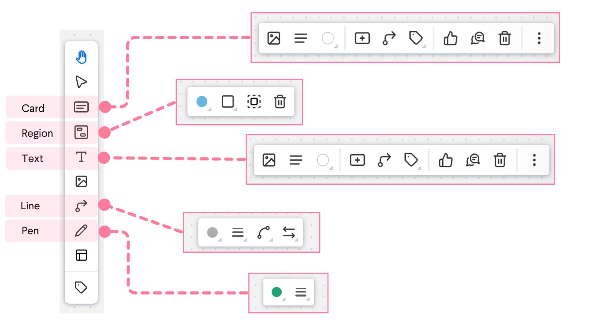
Frameable · 竖轨挂二级条
左竖轨每类工具对应一条横向二级工具条，动作按工具归属展开；主轨只留大类，二级条承载参数与变体。
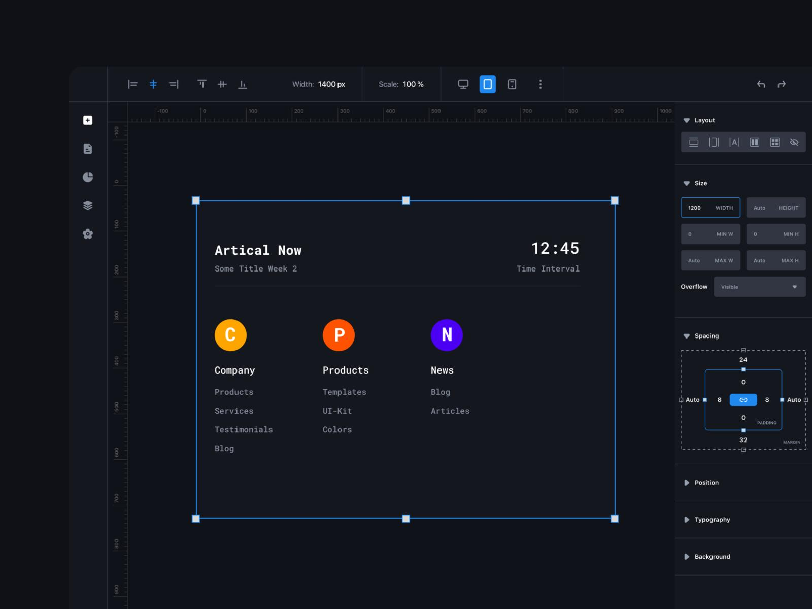
Web Builder · 深色左窄轨
深色 builder 左窄轨图标单列，右侧属性面板；轨内留白均匀、图标同档对齐。形制可参考，深色整套属储备方向。
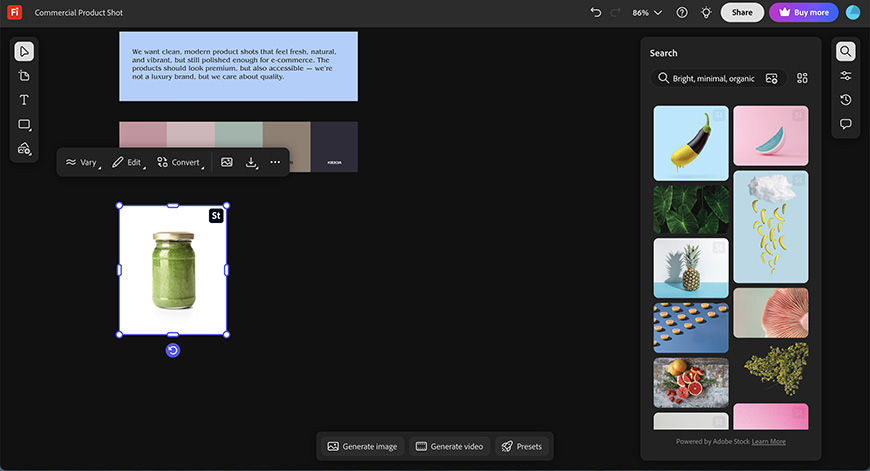
Firefly · AI 编辑器左轨
深色编辑器左竖轨工具单列，画布中央选中框；轨内图标等距、成组。可对照本项目右轨在画布上的落位与间距。
二、导航竖轨（左轨对照）
导航族范式：窄轨只留图标、宽轨带文字；选中浅底或反白；未读角标、状态点、分组分隔自成一套。
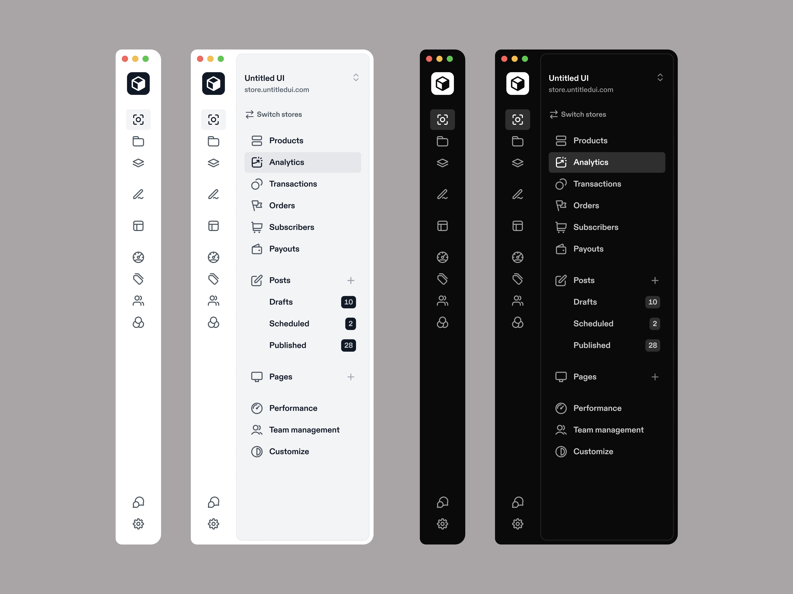
Untitled UI · 宽窄深浅双态
同一套条目收起只留图标、展开带文字，并给深浅两套；选中浅底 + 同色图标，未读红点。双态结构可参考，选中表达沿用本项目左缘绿条。
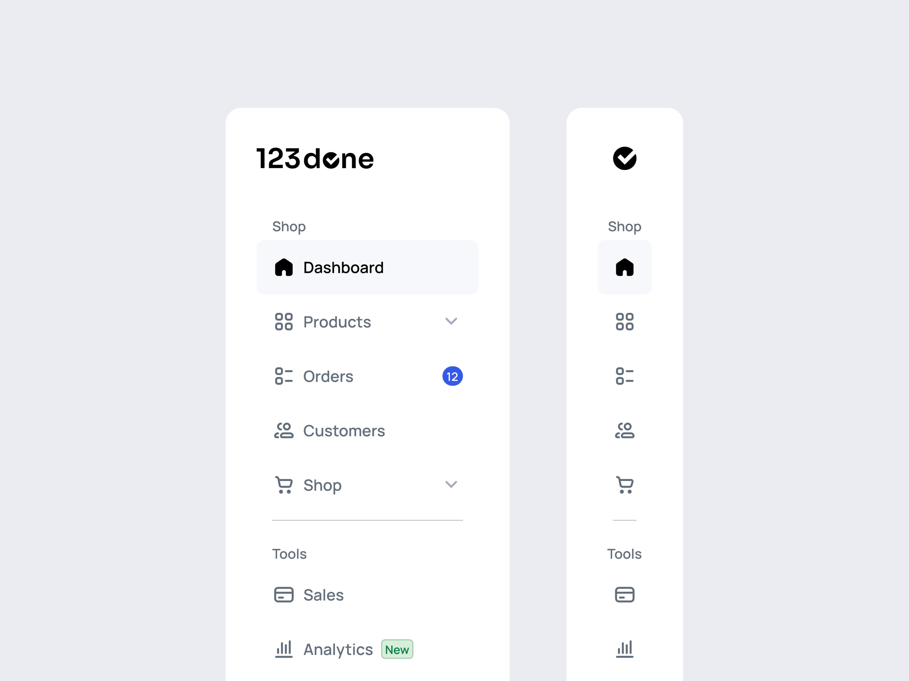
123done · 折叠 / 展开对照
窄轨只图标、宽轨带文字与右侧数字角标；选中深色块反白。角标圆片口径可对照本项目 15px err 圆与状态点。
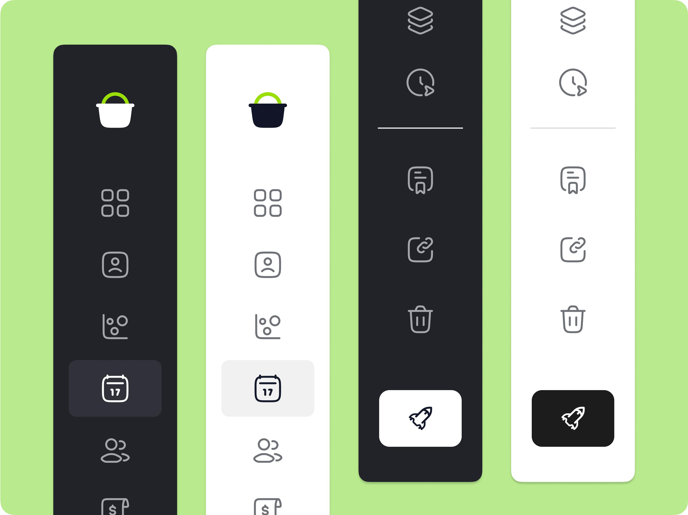
Hugeicons · 双态图标族
深浅两套轨内图标同一族、同档同收框；选中浅灰底或反白方块，其余线性灰字。族内一致性是重点，而非某一枚图标造型。
三、地图控件簇（右下 / 左下对照）
成熟地图把缩放、罗盘、定位、图层收在独立角区，不与编辑器工具列混排；圆钮成列、投影轻、罗盘按需显隐。

Google Maps 桌面 · 右竖列控件
罗盘、2D、定位、缩放 +/- 深色圆钮竖排成簇贴右缘；缩放上下叠放。可对照本项目把缩放/底图归到右下地图簇。
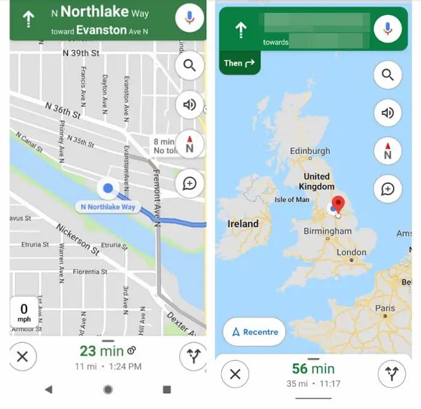
Google Maps 移动端 · 白圆钮竖列
搜索、喇叭、罗盘、加号白圆钮单列右缘，轻柔投影；罗盘白圆 + 红针。可对照本项目地图簇白圆钮与罗盘落点。
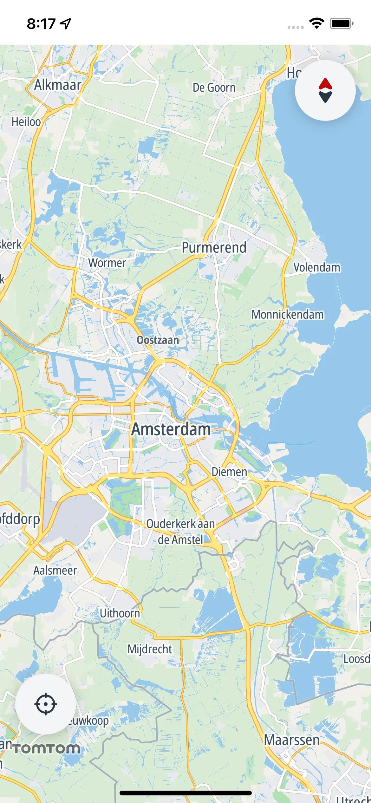
TomTom · 罗盘按需显隐
罗盘白圆落右上、定位钮白圆落左下；指北后罗盘淡出。罗盘红针属地图领域语义，可作本项目指针色的例外保留。
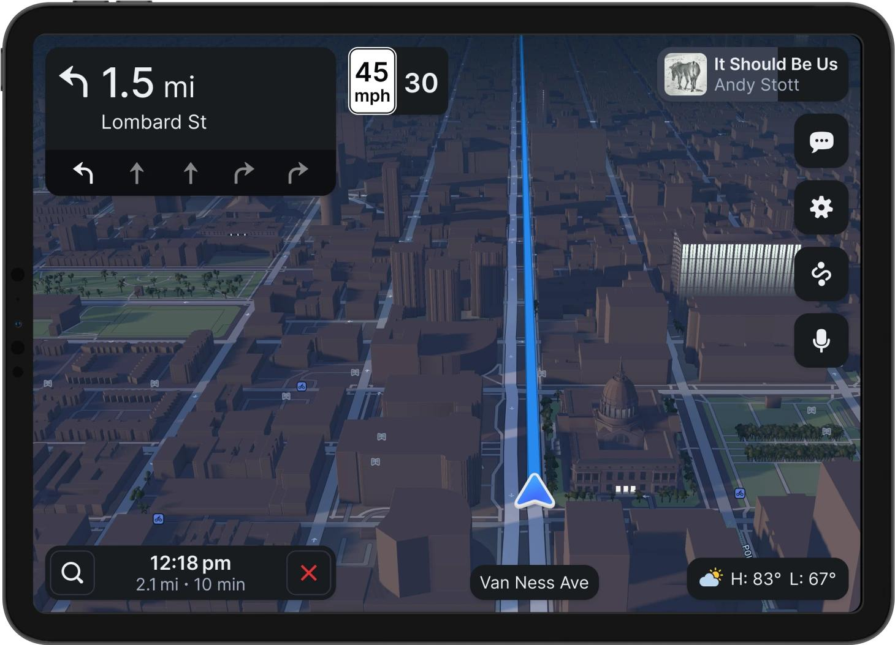
Mapbox · 导航右竖列
深色地图上聊/设/分享/麦克风竖排圆钮成组，主操作反白。右竖列成组思路可参考，深色整套仅作储备。
四、图标库族对照
看图重点：网格基准、线宽/实心重量、档位覆盖、同族内造型一致性。本项目通用族已锁定本地 Material Symbols Rounded 实心，下列库只作造型与档位对照。
Lucide · 线性一族
24px 网格、2px 圆角线宽，造型克制统一；社区延续 Feather。本项目通用族走实心，但其收框比例与网格基准可对照。
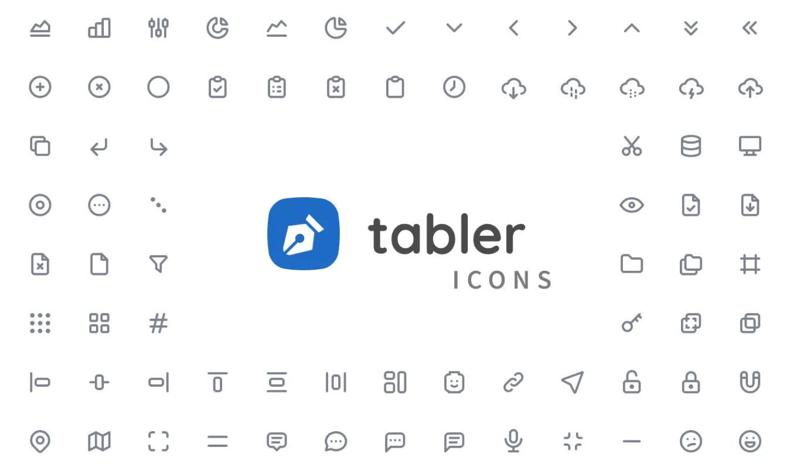
Tabler · Line / Fill 双族
5600+ 枚同时给线族与填充族，24 网格 2px；同族两种重量成套。本项目只取实心一套，成对/开关态思路可参考。
Phosphor · 四档六字重
按 16 / 20 / 24 / 32 成档交付，六档字重；与本项目规范档位 16 行内、20 控件、24 面板、32 空态主图完全对齐。
五、同槽叠放与合钮案例
选择/抓手/同类工具共用一槽的成熟范式：前景当前、后景偏移、小三角指示、弹层行内图标+名+快捷键+勾。

Figma · 同槽弹层
Move / Hand / Scale 一槽叠放，弹层每行图标 + 名称 + 快捷键 + 选中勾；当前工具前景显示。合钮直切方案的主要参照。
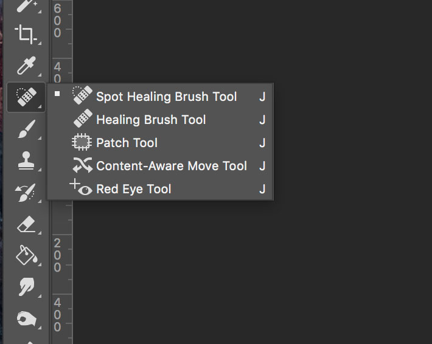
Photoshop · 前景后景叠放
当前工具居前景完整显示，同槽其余工具后景偏移藏后；叠放分层清楚，不互相遮挡主体。
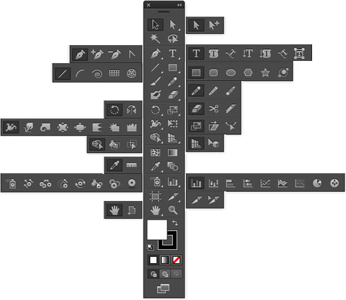
Illustrator · 展开指示
槽位右下小三角提示可展开；图标同族同描边宽，展开状态与闭合状态一致。

Miro · 双钮独立排布
选择箭头与抓手双钮各自独立占格，同族线性；不叠放的另一种思路，对照合钮 vs 双钮两种取舍。

Affinity · 深轨实心族
深轨内全族实心图标，选中反白，不混第三套字形；实心一族的视觉重量可对照本项目右轨工具族。
对照本项目规范 · 取舍口径
可直接采纳
- 角区成簇：缩放、罗盘、定位、底图归地图角区，交付归右上，视图/比例尺/署名留左下，不与编辑器工具列混排（Google 桌面/移动、TomTom）。
- 选中反白表达：当前工具靠按钮底色/描边 + 反白或绿字承接，图标本身保持 currentColor，不在静息态变色（Figma、Affinity、Hugeicons）。
- 同槽结构：同类工具一槽叠放，弹层行内图标 + 名称 + 快捷键 + 选中勾；前景当前、后景偏移、小三角指示（Figma、Photoshop、Illustrator）。
- 档位基准：16 行内 / 20 控件 / 24 面板 / 32 空态主图，图形收框 78%–90%，同档同视觉重量（Phosphor、Tabler、Lucide 网格）。
- 宽窄双态与角标：导航轨收起只留图标、展开带文字；未读圆片、状态点沿用既有 15px / 9px 口径（Untitled、123done）。
需调整 / 暂不采纳
- 线性图标族：参考图多为 2px 描边线性；本项目通用 UI 锁定本地 Material Symbols Rounded 实心，例外仅限角色形体、头像、物料领域图形与搜索/缩放镜片族。
- 深色悬浮条：现行是浅色工作台，深色轨/条仅作深色模式储备；启用需整套深色令牌，不单改一列。
- 强调色：参考图的蓝/橙/紫一律替换为品牌绿 `#4A7C59` / `#35624A`；品牌绿全产品只用于选中指示与发送键，不做整钮绿色容器。
- 地图红针：罗盘指北红属地图领域语义，可保留为例外；其余控件图标仍走 currentColor 墨色/绿字两族分工。